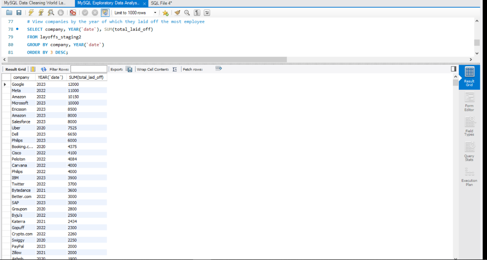

This project includes a MySQL EDA file and a Layoffs Excel file for data exploratory analysis which is an extension to my data cleaning project. My GitHub page for all of my projects is: https://github.com/nhuxhuynh
This project is an extension of my Layoffs Data Cleaning Project (accessible via the first button above)! The EDA files for this project can also be downloaded above. I began by exploring the data using simple functions, such as:
Below is an example of the result when calculating the total layoffs (`SUM()`) grouped by company names, ordered from most to least layoffs.
I analyzed the total layoffs (`SUM()`) grouped by various categories such as industry, country, year, and company stage. This analysis provides an indication of where the highest total layoffs occurred within each category. It offers a quick and efficient way to interpret the data for specific trends, such as the industries most impacted by layoffs.
Here's an example of the result for the total SUM of laid off based on the types of industry, descending from the most to least total of laid off (order by 2 desc). Exploring this data can help us see that the Consumer industry has the highest layoffs compared to other industry, this data can really help us see what industry to invest in or work with/in.
To examine layoffs over time, I used the `SUBSTRING()` function to extract the year and month (`yyyy-mm`) from the date column (positions 1 to 7). This allowed me to calculate the total layoffs for each month, ordered chronologically from the earliest month in 2020 to the latest in 2023 (`ORDER BY 1 ASC`).
Using the `ROLLING_TOTAL()` function, I calculated the cumulative total layoffs month by month. For example, in March 2020 (the first month), the total layoffs recorded were 9,628. In subsequent months, each month's layoffs were added to the cumulative total in the `ROLLING_TOTAL` column. This function is useful for observing trends in workforce reductions over time.
By using 3 different columns, we are able to see a wider view and more detailed informations of the different companies and the year they laid off the MOST employees. As we can see in the result, Google laid off the most employees compared to all other companies and this huge laid off happened in 2023. :(
This query uses two Common Table Expressions (CTEs) to analyze layoffs:
Here's the result for this sql query, and as we can see the top 5 companies for the most layoffs each year is shown and ranked in order. Again, we can see that Meta and Google has the most layoffs for their year in 2022 and 2023. :( Aside from that, this query is useful when trying to analyze trends in the workforce cuts and identify companies that are mainly affected during layoffs on a yearly basis. It can help us take a look at the company and see what to avoid, while making strategic decision-making for our own development.